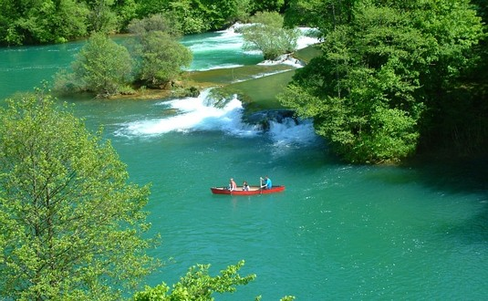

Rijeka Gacka
Gacka je rijeka ponornica duga 61 km sa svojim pritokama, a izvire ispod Godače i Venca u Sincu.

Rijeka Mrežnica
Mrežnica je rijeka u Hrvatskoj, lijevi pritok rijeke Korane. Izvire kod Slunja u Kordunu, a ulijeva se u Koranu kod Karlovca.
Rijeka Korana
Korana je rijeka u Hrvatskoj i BiH, desna pritoka rijeke Kupe.

Rijeka Kupa
Kupa (slovenski Kolpa) je rijeka čiji je izvor i ušće u Hrvatskoj, a dijelom svoga toka čini granicu sa Slovenijom.

Rijeka Dobra
Dobra je hrvatska rijeka ponornica. Izvire iz dva izvora: kod Bukova vrha i kod Skrada.

Rijeka Una
Una je na izvoru planinska rijeka, a kako ide prema ušću, postaje ravničarska rijeka.